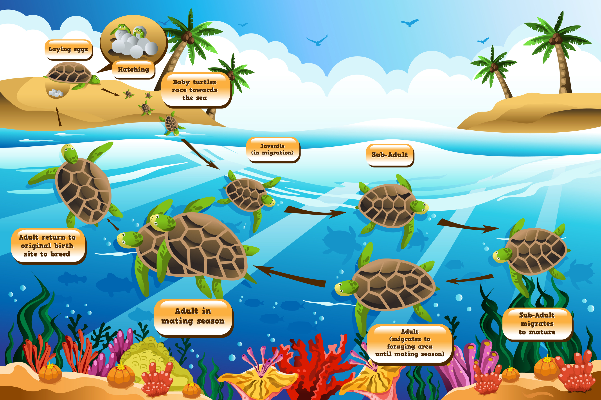

Types of Turtles
Scientists recognize seven living species of sea turtles, which are grouped into six genera. Each sea turtle has both a scientific name and a common name. The scientific name identifies the genus and species, and the common name typically describes some characteristic of the turtle’s body. Different species of sea turtles like to eat different kinds of food. Sea turtles have mouths and jaws that are specially formed to help them eat the foods they like. And each species of sea turtle eats, sleeps, mates and swims in distinctly different areas. Sometimes their habitats overlap, but for the most part they each have different preferences.
Hatcheries in Sri Lanka |
||||
 |
Around The Sri Lankan coast line there are six turtle hatcheries in total, Each year around 400 turtles dig there nests in the sandy beaches around the island and lay eggs. these hatcheries are located in Hikkaduwa,Kosgoda and Bentota,etc.. . weeks later the eggs get hatched and new born turtles make there way to the sea. through out the whole process the hatcheries give protection to the eggs and help new born turtles to improve there survival rate in a natural environment. |
|||
Life of Turtles |
||||
Baby turtles start there life eggs that are laid in nests on beaches around the globe. these baby turtles then get hatched and crawl there way up to the surface and start there journey towrads the sea.then the juvenile stage that they wonder in different areas in the sea with high density of seaweed where they grow and get fed this stage is know as the "lost year" then they get back to where they were born for mating purposes during this times many get hunted down some get attacked in the sea some dies from natural causes. then after mating the cycle repeats it self. |
 | |||
- Climate Changes
- Pollution
- Loss of Habitat
- Plastic waste
- Global warming
- reduce Pollution
- Beach cleanups
- Deep sea cleanups
- Turtle Hatcheries
- Laws to protect turtles

Copyright 2023 by Kisura N. Wijeweera. All Rights Reserved.
WDOS 2023©